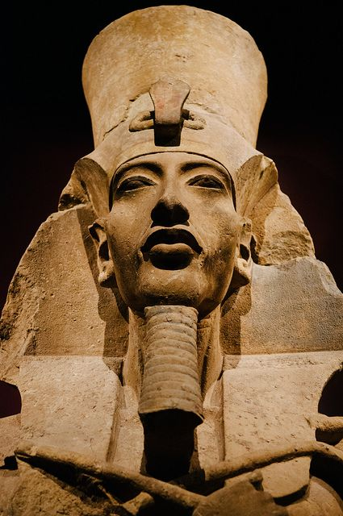

MODULES DE QUESTIONS
Kintangulu dia NZA
Kimuntu
DISU-MU au MASU-MU
Les BIMWELOS
Intro. au KI-NSONO
Techniques ZOLE
NTINU
Science KI-NDOKI
KISONO DIA NZA
NDOSI
Cosmogonie KONGO
MUNU KIA NSI...
Intro. au couleurs
Les 5 sens du MUNTU
Techniques NTENTE
MENGA
Mystères BISELIYA
MBONGO
Le Muntu Multidim.
DIA